Module 3: Modeling Part 1
Lab
Loading the Libraries
First, let’s load any necessary libraries
library(tidyverse) # General functions and plots
library(faraway) # Source of the gala dataset
library(car) # For some model diagnostics
library(arm) # For binned plot for logistic regression
library(mgcv) # For beta regression
library(microbiome) # Source of dietswap data
library(microbiomeDataSets) # Source of baboongut data
library(phyloseq) # to calculate diversity measures
library(GUniFrac) # for throat dataset
library(MGLM) # for rna seq datasetFirst, we will cover multiple linear regression modeling in R with the lm() function. In regression modeling, it is always important to consider the data available to you. What is your response of interest? Is it a continuous, roughly normally distributed variable? Which predictors should be included in your model? Do these predictors have a linear relationship with the outcome?
Multiple Linear Regression and the Dietswap Data
Supposed researchers are interested in how nationality and bmi group are related to diversity of bacteria in the gut microbiome. In particular, researchers are interested to know whether nationality moderates the relationship between bmi group and Shannon diversity.
Loading the Data
# load the dietswap data from the microbiome package
data(dietswap)
# look up description of dataset
?dietswap
# given that this is a phylogenetic class format, we get the data as follows:
otu_table(dietswap) # counts of different OTUs
sample_data(dietswap) # the metadata
# let's look at the summary of our sample data
summary(sample_data(dietswap))Since we do not have a column for the Shannon diversity, we must calculate it ourselves with the estimate_richness() function from the phyloseq package.
# we don't have shannon diversity so we must calculate it given the OTU table
Shannon <- estimate_richness(otu_table(dietswap), measures = c("Shannon"))
# add shannon diversity to our sample data
dietswap_data <- cbind.data.frame(Shannon=Shannon$Shannon, sample_data(dietswap))
# look at histogram of Shannon diversity
hist(dietswap_data$Shannon)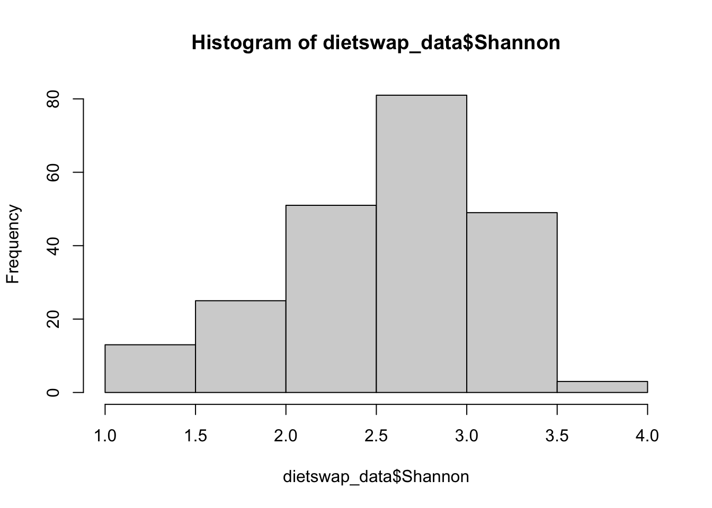
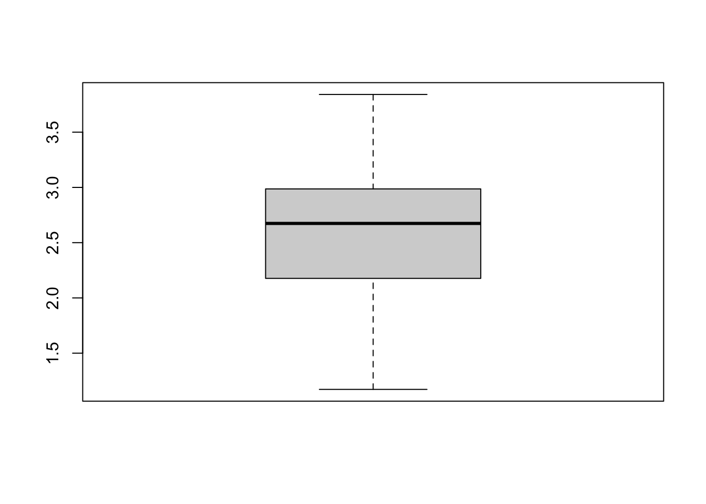
Another potential issue we notice when reviewing the dataset is that each sample was observed at multiple time points which means this data will violate our independence assumption. To overcome this, we can filter our data to only look at the first time point.
# remove second time point for each group
dietswap_data_t1 <- dietswap_data %>%
filter(timepoint.within.group==1)Since the researchers are interested to know whether there is an interaction effect, we must include the interaction and main effects in our linear model. To include an interaction between two variables, we use ’*’ in the model which will automatically include both main effects and the interaction effect of the 2 variables.
# fitting the full multiple linear regression in R
mod1 <- lm(Shannon~nationality*bmi_group+sex, data=dietswap_data_t1)
summary(mod1)##
## Call:
## lm(formula = Shannon ~ nationality * bmi_group + sex, data = dietswap_data_t1)
##
## Residuals:
## Min 1Q Median 3Q Max
## -1.32963 -0.36395 0.09898 0.33401 1.44820
##
## Coefficients:
## Estimate Std. Error t value Pr(>|t|)
## (Intercept) 2.7540 0.2296 11.993 <2e-16 ***
## nationalityAFR -0.3100 0.2212 -1.401 0.1640
## bmi_groupoverweight 0.2642 0.2275 1.162 0.2481
## bmi_groupobese -0.2012 0.2208 -0.911 0.3643
## sexmale -0.0509 0.1377 -0.370 0.7125
## nationalityAFR:bmi_groupoverweight -0.5859 0.2934 -1.997 0.0484 *
## nationalityAFR:bmi_groupobese -0.0190 0.2880 -0.066 0.9475
## ---
## Signif. codes: 0 '***' 0.001 '**' 0.01 '*' 0.05 '.' 0.1 ' ' 1
##
## Residual standard error: 0.5512 on 105 degrees of freedom
## Multiple R-squared: 0.2439, Adjusted R-squared: 0.2007
## F-statistic: 5.645 on 6 and 105 DF, p-value: 4.112e-05We see from the results of this linear model that there is very moderate evidence of an interaction effect between BMI group and nationality such that those with African nationality have a greater difference in diversity between the lean and overweight groups than those of African American nationality. Overall, the variables in the model accounted for 24.4% of variability in the diversity response.
Model Diagnostics
Again, after fitting the model, we must check for the following assumptions:
Linearity - we already checked this prior to fitting the model
Independence - we already fixed this by removing the second time point
Homoscedasticity - we can check this with a scatterplot of model residuals vs. fitted values
Normality - we can check this with a qq plot of model residuals
No multicollinearity - we will ignore this for this model for now since we have interaction terms and look at it for the model without interactions
# 3. homoscedasticity
res <- residuals(mod1)
fit <- fitted(mod1)
mod_res <- cbind.data.frame(res,fit)
# create the residuals vs fitted values plot
ggplot(data=mod_res,aes(x = fit, y = res)) +
geom_point(color = "blue", size = 2) + # Plot the residuals
geom_hline(yintercept = 0, linetype = "dashed", color = "red") + # Add a horizontal line at 0
labs(title = "Residuals vs Fitted Values",
x = "Fitted Values",
y = "Residuals") +
theme_minimal()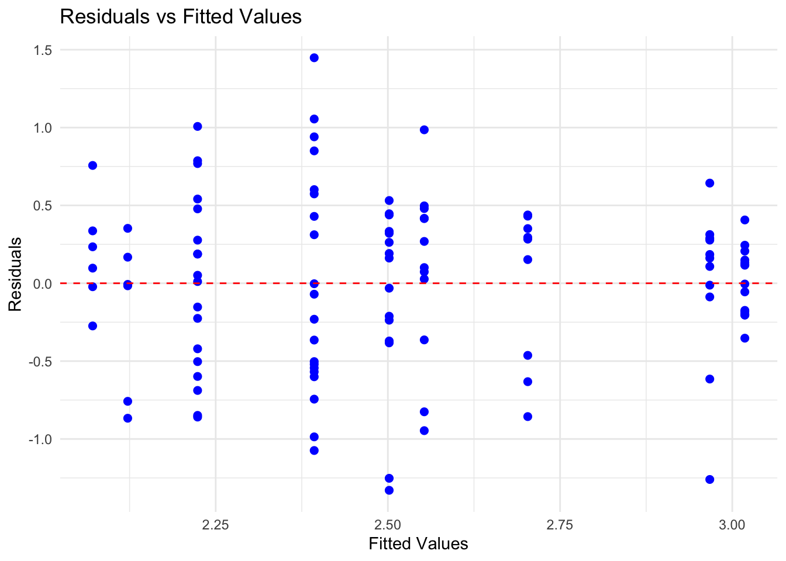
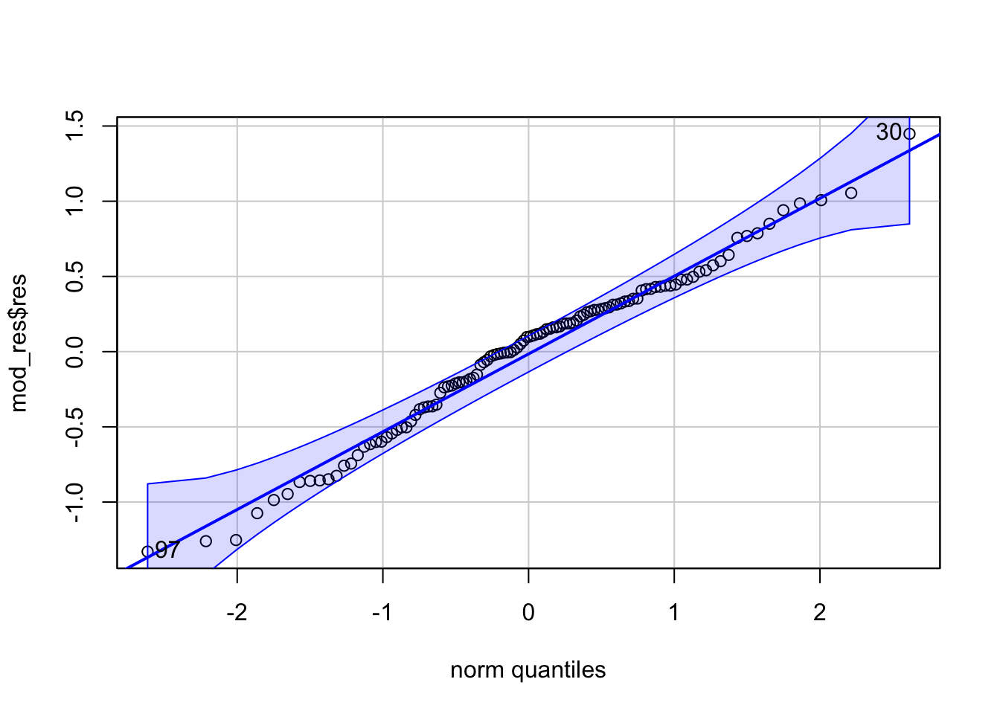
## [1] 30 97Comparing Nested Models
When fitting multiple linear regression models, it’s often useful to explore whether a simpler, more parsimonious model can adequately explain the data. For example, when working with indicator variables, we can assess whether they should be included for a change in intercept (main effect), a change in slope (interaction effect), or excluded altogether. By comparing models without the indicator, with only the main effect, and with the interaction effect, we can evaluate the contribution of the indicator variable and determine its necessity in the final model.
Here, we will use the anova() function in R to compare nested models. The null hypothesis of the test run by this anova function is H0: reduced (simpler model) is adequate and the alternative hypothesis is H1: Full (more complex) model is needed to explain the data. Therefore, if the p value is small, then we have evidence that we should include the extra variable(s).
# fit model with only main effects for nationality
mod2 <- lm(Shannon~nationality+bmi_group+sex, data=dietswap_data_t1)
summary(mod2)##
## Call:
## lm(formula = Shannon ~ nationality + bmi_group + sex, data = dietswap_data_t1)
##
## Residuals:
## Min 1Q Median 3Q Max
## -1.35941 -0.34599 0.06785 0.32141 1.51472
##
## Coefficients:
## Estimate Std. Error t value Pr(>|t|)
## (Intercept) 2.97433 0.19853 14.982 < 2e-16 ***
## nationalityAFR -0.52438 0.11508 -4.557 1.39e-05 ***
## bmi_groupoverweight -0.04098 0.16653 -0.246 0.8061
## bmi_groupobese -0.31923 0.16734 -1.908 0.0591 .
## sexmale -0.12343 0.13122 -0.941 0.3490
## ---
## Signif. codes: 0 '***' 0.001 '**' 0.01 '*' 0.05 '.' 0.1 ' ' 1
##
## Residual standard error: 0.5606 on 107 degrees of freedom
## Multiple R-squared: 0.2029, Adjusted R-squared: 0.1731
## F-statistic: 6.81 on 4 and 107 DF, p-value: 6.374e-05# fit model without nationality
mod3 <- lm(Shannon~bmi_group+sex, data=dietswap_data_t1)
summary(mod3)##
## Call:
## lm(formula = Shannon ~ bmi_group + sex, data = dietswap_data_t1)
##
## Residuals:
## Min 1Q Median 3Q Max
## -1.4473 -0.4295 0.1259 0.4826 1.3520
##
## Coefficients:
## Estimate Std. Error t value Pr(>|t|)
## (Intercept) 2.46753 0.17886 13.796 <2e-16 ***
## bmi_groupoverweight 0.23528 0.16870 1.395 0.166
## bmi_groupobese -0.07057 0.17206 -0.410 0.682
## sexmale 0.02172 0.13846 0.157 0.876
## ---
## Signif. codes: 0 '***' 0.001 '**' 0.01 '*' 0.05 '.' 0.1 ' ' 1
##
## Residual standard error: 0.6098 on 108 degrees of freedom
## Multiple R-squared: 0.04824, Adjusted R-squared: 0.02181
## F-statistic: 1.825 on 3 and 108 DF, p-value: 0.147## Analysis of Variance Table
##
## Model 1: Shannon ~ bmi_group + sex
## Model 2: Shannon ~ nationality + bmi_group + sex
## Res.Df RSS Df Sum of Sq F Pr(>F)
## 1 108 40.155
## 2 107 33.629 1 6.5256 20.763 1.385e-05 ***
## ---
## Signif. codes: 0 '***' 0.001 '**' 0.01 '*' 0.05 '.' 0.1 ' ' 1## Analysis of Variance Table
##
## Model 1: Shannon ~ bmi_group + sex
## Model 2: Shannon ~ nationality * bmi_group + sex
## Res.Df RSS Df Sum of Sq F Pr(>F)
## 1 108 40.155
## 2 105 31.901 3 8.2543 9.0563 2.189e-05 ***
## ---
## Signif. codes: 0 '***' 0.001 '**' 0.01 '*' 0.05 '.' 0.1 ' ' 1## Analysis of Variance Table
##
## Model 1: Shannon ~ nationality + bmi_group + sex
## Model 2: Shannon ~ nationality * bmi_group + sex
## Res.Df RSS Df Sum of Sq F Pr(>F)
## 1 107 33.629
## 2 105 31.901 2 1.7287 2.8449 0.06263 .
## ---
## Signif. codes: 0 '***' 0.001 '**' 0.01 '*' 0.05 '.' 0.1 ' ' 1From comparing the nested models, we see that nationality should be included in the model but that we do not require the interaction effect. We can go ahead and check the model diagnostics for mod2.
# 3. homoscedasticity
res <- residuals(mod2)
fit <- fitted(mod2)
mod_res <- cbind.data.frame(res,fit)
# create the residuals vs fitted values plot
ggplot(data=mod_res,aes(x = fit, y = res)) +
geom_point(color = "blue", size = 2) + # Plot the residuals
geom_hline(yintercept = 0, linetype = "dashed", color = "red") + # Add a horizontal line at 0
labs(title = "Residuals vs Fitted Values",
x = "Fitted Values",
y = "Residuals") +
theme_minimal()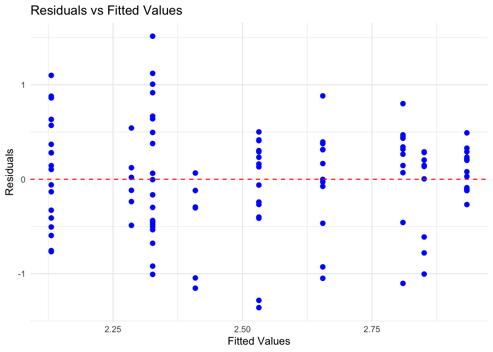
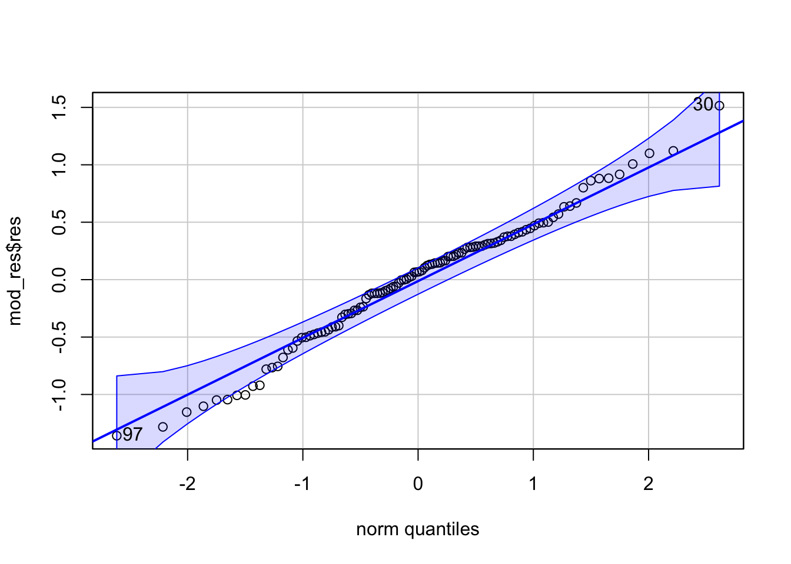
## [1] 30 97## GVIF Df GVIF^(1/(2*Df))
## nationality 1.166324 1 1.079965
## bmi_group 1.667090 2 1.136291
## sex 1.521859 1 1.233637Visualize our Model
Now let’s plot the interaction between bmi_group and nationality on Shannon diversity to help us interpret our findings.
ggplot(dietswap_data_t1, aes(x = bmi_group, y = Shannon, color = nationality, group = nationality)) +
stat_summary(fun = mean, geom = "point", size = 3) + # Plot the means
stat_summary(fun = mean, geom = "line") + # Connect the means with lines
labs(title = "Interaction between Nationality, BMI Group, and Shannon Diversity",
x = "BMI Group",
y = "Shannon Diversity Index",
color = "Nationality") +
theme_minimal() 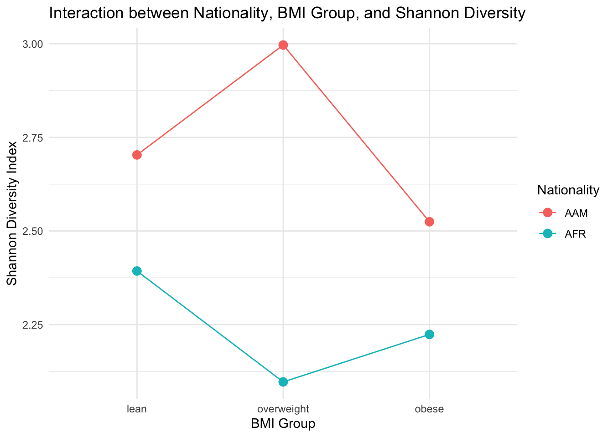
Logistic Regression
Suppose researchers are interested to learn more about the association between shannon diversity of the throat bacteria and smoking. We can use logistic regression to help answer this question through looking at whether we can predict smoking status with shannon diversity of bacteria in the throat, age, and sex.
Loading the Data
# first, need to load in meta data and otu table
data(throat.meta)
data(throat.otu.tab)
# look up descriptions of the data
?throat.meta
?throat.otu.tab
# let's turn this data into a phyloseq object
throat.physeq <- phyloseq(
otu_table(throat.otu.tab, taxa_are_rows = FALSE),
sample_data(throat.meta)
)
# check our phyloseq object
otu_table(throat.physeq)
sample_data(throat.physeq)
# now we can estimate shannon diversity
Shannon <- estimate_richness(otu_table(throat.physeq), measures="Shannon")
throat_data <- cbind.data.frame(Shannon=Shannon$Shannon,sample_data(throat.physeq))Fitting the Logistic Regression Model
In R, we can use the glm() function to fit a logistic regression model by setting family = “binomial” as an argument.
# now let's look at the effect of sex, age, and diversity on smoking
log_mod <- glm(SmokingStatus~Age+Sex+Shannon, data=throat_data, family=binomial)
summary(log_mod)##
## Call:
## glm(formula = SmokingStatus ~ Age + Sex + Shannon, family = binomial,
## data = throat_data)
##
## Coefficients:
## Estimate Std. Error z value Pr(>|z|)
## (Intercept) 1.97623 2.54902 0.775 0.4382
## Age 0.04757 0.02798 1.700 0.0891 .
## SexMale 0.80698 0.61972 1.302 0.1929
## Shannon -1.29961 0.80217 -1.620 0.1052
## ---
## Signif. codes: 0 '***' 0.001 '**' 0.01 '*' 0.05 '.' 0.1 ' ' 1
##
## (Dispersion parameter for binomial family taken to be 1)
##
## Null deviance: 82.911 on 59 degrees of freedom
## Residual deviance: 75.147 on 56 degrees of freedom
## AIC: 83.147
##
## Number of Fisher Scoring iterations: 4## (Intercept) Age SexMale Shannon
## 7.2154548 1.0487182 2.2411336 0.2726372## 2.5 % 97.5 %
## (Intercept) 0.05231538 1437.791848
## Age 0.99472215 1.111987
## SexMale 0.68252995 7.976087
## Shannon 0.05015106 1.235533It does not look like Shannon diversity has a significant association with smoking status. That is, the p-value for the Shannon diversity covariate is 0.105. We can interpret the coefficient on the logit scale as, increasing Shannon diversity by 1 unit is estimated to decrease log(p/1-p) of smoking by 1.2996. Alternatively, we can interpret the coefficient on the odds scale by exponentiating the coefficient. On the odds scale, we can say that increasing the Shannon diversity changes the odds of smoking by a factor of 0.273 (95% CI: 0.050, 1.236).
Model Diagnostic
Again, after fitting the model, we must check for the following assumptions:
Linearity - we can check the relationship between covariates and logit outcome with component-residual plots
Independence - we will assume the data observations are independent
Proper fitting distribution - we can check this with a scatterplot of model DEVIANCE residuals vs. linear predictor
No multicollinearity - we can check this with variance inflation factors
# checking assumptions
# 1. linearity assumption with component+residual plots
crPlot(log_mod, variable="Shannon")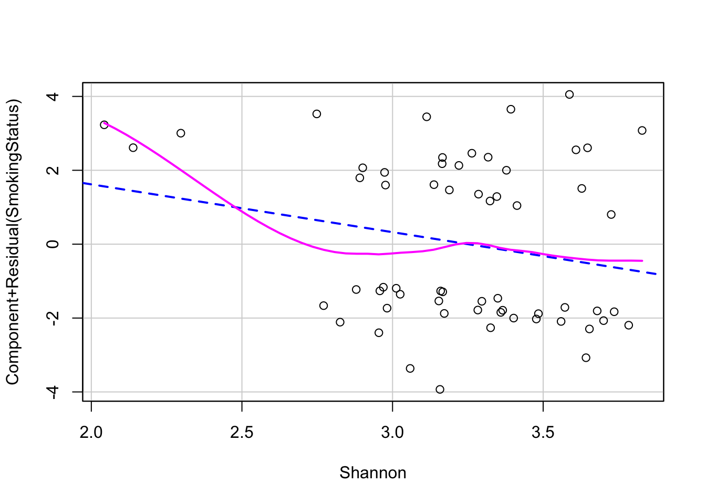
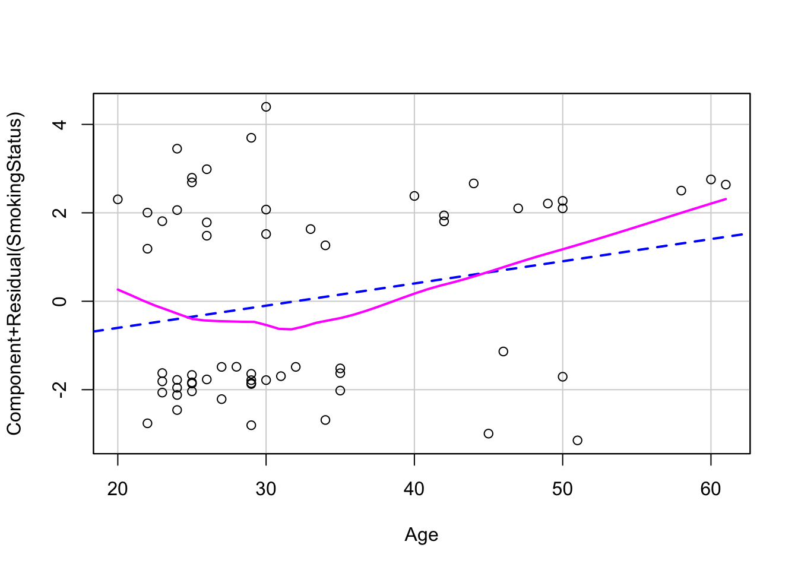
# 3. proper fitting distribution (look for no pattern/constant variance)
plot(residuals(log_mod)~predict(log_mod)) # notice it looks weird because we only have 2 response options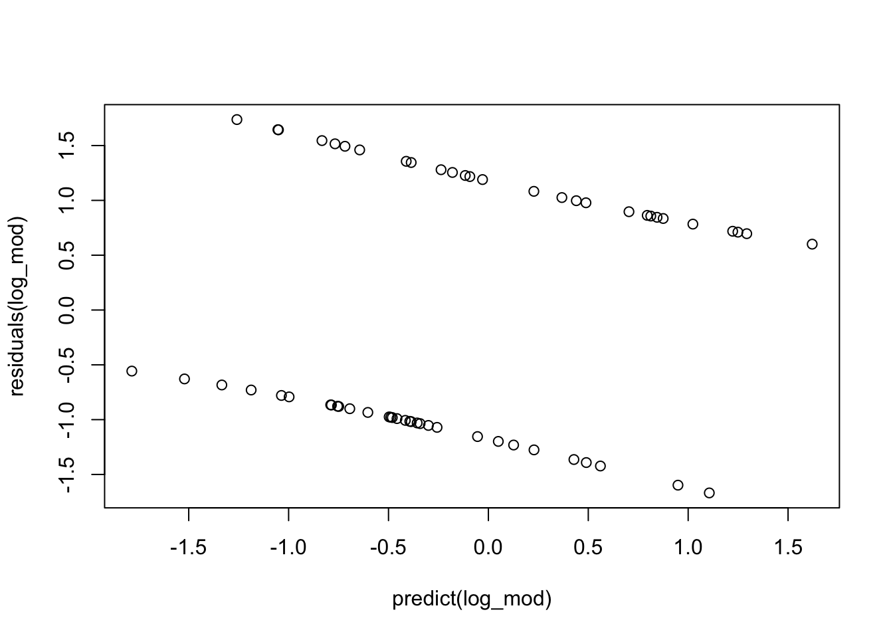
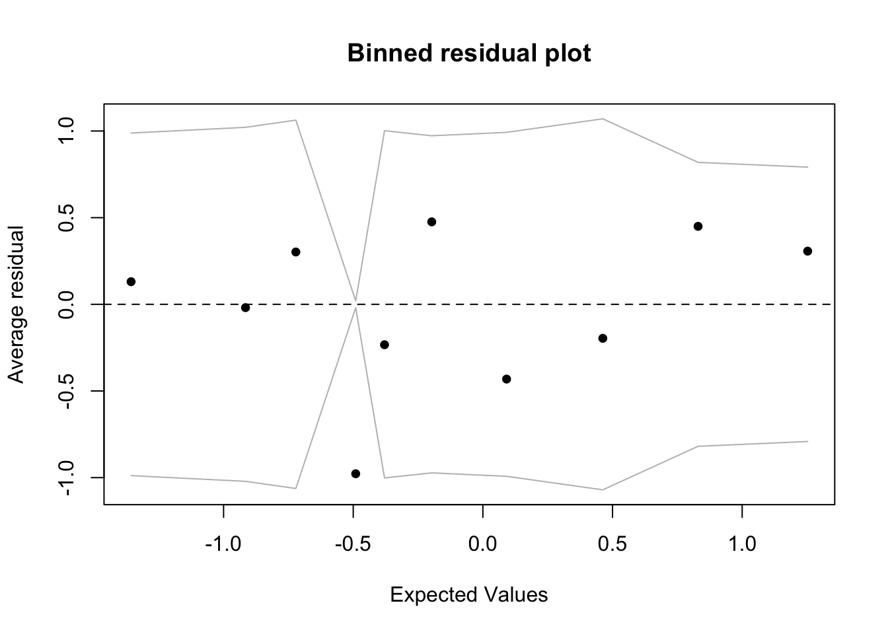
## Age Sex Shannon
## 1.074958 1.120760 1.095087Visualization
# first we need smoking status to be numeric
throat_data$SmokingStatusNumeric <- ifelse(throat_data$SmokingStatus=="Smoker",1,0)
# create a ggplot object with the data points
p <- ggplot(throat_data, aes(x = Shannon, y = SmokingStatusNumeric)) +
geom_point(alpha = 0.5) + # Plot the actual data points
stat_smooth(method = "glm", method.args = list(family = binomial), se = FALSE, color = "blue") +
labs(title = "Logistic Regression Curve",
x = "Shannon Diversity",
y = "Probability of Smoking")
# display the plot
p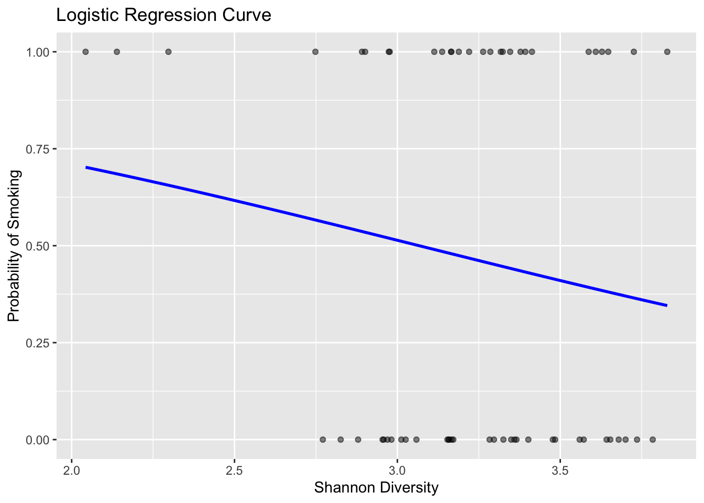
Binomial Regression
Suppose researchers are interested in the number of surviving trout eggs in boxes across different locations at different weeks after placement. In particular, the outcome of interest is the number of trout eggs alive in the box/the total number of trout eggs in the box.
Loading the Data
We will use the troutegg data from faraway for this analysis.
# first, let's load in the data
data(troutegg) # from faraway
# view description of the data
?troutegg
# view data
head(troutegg)## survive total location period
## 1 89 94 1 4
## 2 106 108 2 4
## 3 119 123 3 4
## 4 104 104 4 4
## 5 49 93 5 4
## 6 94 98 1 7## 'data.frame': 20 obs. of 4 variables:
## $ survive : int 89 106 119 104 49 94 91 100 80 11 ...
## $ total : int 94 108 123 104 93 98 106 130 97 113 ...
## $ location: Factor w/ 5 levels "1","2","3","4",..: 1 2 3 4 5 1 2 3 4 5 ...
## $ period : Factor w/ 4 levels "4","7","8","11": 1 1 1 1 1 2 2 2 2 2 ...Fitting the binomial regression
We will fit the binomial regression using the glm function and setting family=“binomial”. However, we have to tell R how many successes we have in our outcome and how many failures.
# fit binomial
binom_mod <- glm(cbind(survive,total-survive)~location+period, data=troutegg, family="binomial")
summary(binom_mod)##
## Call:
## glm(formula = cbind(survive, total - survive) ~ location + period,
## family = "binomial", data = troutegg)
##
## Coefficients:
## Estimate Std. Error z value Pr(>|z|)
## (Intercept) 4.6358 0.2813 16.479 < 2e-16 ***
## location2 -0.4168 0.2461 -1.694 0.0903 .
## location3 -1.2421 0.2194 -5.660 1.51e-08 ***
## location4 -0.9509 0.2288 -4.157 3.23e-05 ***
## location5 -4.6138 0.2502 -18.439 < 2e-16 ***
## period7 -2.1702 0.2384 -9.103 < 2e-16 ***
## period8 -2.3256 0.2429 -9.573 < 2e-16 ***
## period11 -2.4500 0.2341 -10.466 < 2e-16 ***
## ---
## Signif. codes: 0 '***' 0.001 '**' 0.01 '*' 0.05 '.' 0.1 ' ' 1
##
## (Dispersion parameter for binomial family taken to be 1)
##
## Null deviance: 1021.469 on 19 degrees of freedom
## Residual deviance: 64.495 on 12 degrees of freedom
## AIC: 157.03
##
## Number of Fisher Scoring iterations: 5Model diagnostics
Again, after fitting the model, we must check for the following assumptions:
Linearity - we do not have any continuous or numeric variables
Independence - we will assume the data observations are independent
Proper fitting distribution - we can check this with a scatterplot of model DEVIANCE residuals vs. linear predictor
No multicollinearity - we can check this with variance inflation factors
# checking assumptions
# 3. proper fitting distribution (look for no pattern/constant variance)
plot(residuals(binom_mod)~predict(binom_mod)) 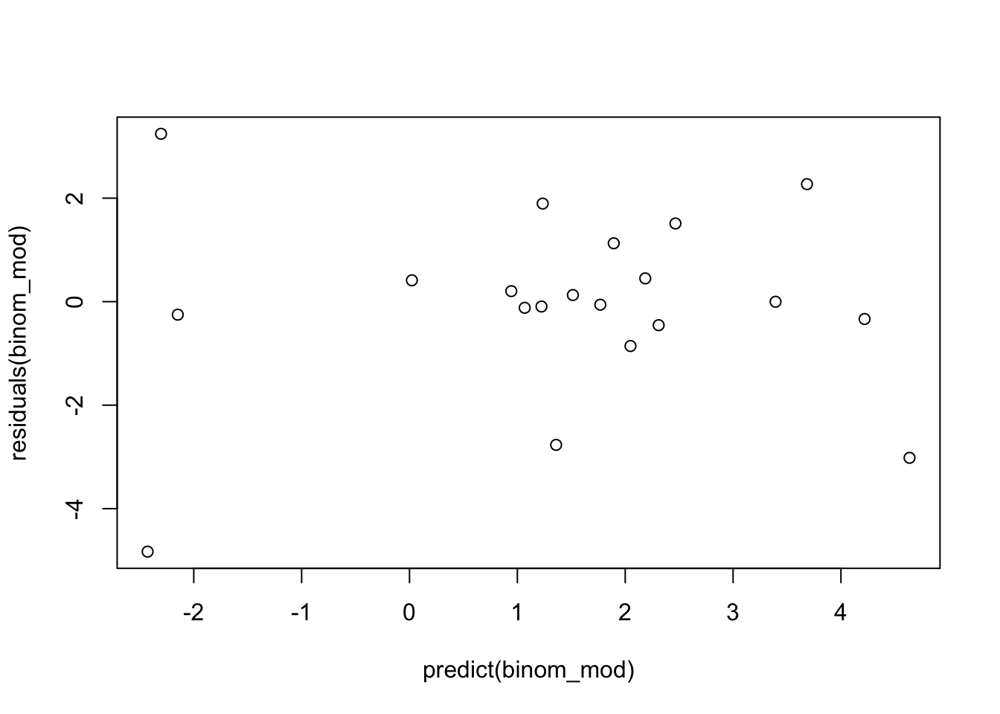
## GVIF Df GVIF^(1/(2*Df))
## location 1.33796 4 1.037064
## period 1.33796 3 1.049721Addressing Overdispersion in Binomial
The binomial model assumes that the variance is related to the our outcome, p, as p(1-p). If the variance is greater than what is assumed by the model, it is called ‘overdispersion’. We can estimate overdispersion as deviance/df residuals. If this ratio is greater than 1 we have overdispersion, if it is (roughly) 1 we have no overdispersion, and if it is less than 1, we have underdispersion.
If we have overdispersion of the binomial, we can try to fit a quasibinomial model instead which will estimate the dispersion parameter instead of assuming it to be 1.
## [1] 5.374593# if it is large, we can use 'quasibinomial' as the family instead to account for this
binom_mod2 <- glm(cbind(survive,total-survive)~location+period, data=troutegg, family="quasibinomial")
summary(binom_mod2)##
## Call:
## glm(formula = cbind(survive, total - survive) ~ location + period,
## family = "quasibinomial", data = troutegg)
##
## Coefficients:
## Estimate Std. Error t value Pr(>|t|)
## (Intercept) 4.6358 0.6495 7.138 1.18e-05 ***
## location2 -0.4168 0.5682 -0.734 0.477315
## location3 -1.2421 0.5066 -2.452 0.030501 *
## location4 -0.9509 0.5281 -1.800 0.096970 .
## location5 -4.6138 0.5777 -7.987 3.82e-06 ***
## period7 -2.1702 0.5504 -3.943 0.001953 **
## period8 -2.3256 0.5609 -4.146 0.001356 **
## period11 -2.4500 0.5405 -4.533 0.000686 ***
## ---
## Signif. codes: 0 '***' 0.001 '**' 0.01 '*' 0.05 '.' 0.1 ' ' 1
##
## (Dispersion parameter for quasibinomial family taken to be 5.330358)
##
## Null deviance: 1021.469 on 19 degrees of freedom
## Residual deviance: 64.495 on 12 degrees of freedom
## AIC: NA
##
## Number of Fisher Scoring iterations: 5Poisson Regression
Loading the Data
We will use the faramea.csv data.
# read in the dataset
faramea <- read.csv('module3_faramea.csv')
# look at first 6 rows
head(faramea)## X UTM.EW UTM.NS Precipitation Elevation Age Age.cat Geology
## 1 B0 625754.0 1011569 2530.0 120 3 c3 Tb
## 2 B49 626654.0 1011969 2530.0 120 3 c3 Tb
## 3 p1 614856.9 1031786 2993.2 20 2 c2 Tc
## 4 p2 613985.4 1030725 3072.0 100 3 c3 Tc
## 5 p3 614674.3 1023802 3007.4 180 1 c1 Tc
## 6 p4 615018.6 1023548 2999.8 180 1 c1 Tc
## Faramea.occidentalis
## 1 14
## 2 7
## 3 0
## 4 0
## 5 2
## 6 1## 'data.frame': 43 obs. of 9 variables:
## $ X : chr "B0" "B49" "p1" "p2" ...
## $ UTM.EW : num 625754 626654 614857 613985 614674 ...
## $ UTM.NS : num 1011569 1011969 1031786 1030725 1023802 ...
## $ Precipitation : num 2530 2530 2993 3072 3007 ...
## $ Elevation : int 120 120 20 100 180 180 40 30 60 50 ...
## $ Age : int 3 3 2 3 1 1 2 2 1 3 ...
## $ Age.cat : chr "c3" "c3" "c2" "c3" ...
## $ Geology : chr "Tb" "Tb" "Tc" "Tc" ...
## $ Faramea.occidentalis: int 14 7 0 0 2 1 0 0 2 0 ...## X UTM.EW UTM.NS Precipitation
## Length:43 Min. :600714 Min. : 962862 Min. :1888
## Class :character 1st Qu.:625578 1st Qu.:1009776 1st Qu.:2406
## Mode :character Median :637732 Median :1012428 Median :2516
## Mean :635927 Mean :1013984 Mean :2643
## 3rd Qu.:645611 3rd Qu.:1023675 3rd Qu.:2996
## Max. :688165 Max. :1045987 Max. :4002
## Elevation Age Age.cat Geology
## Min. : 10.0 Min. :1.000 Length:43 Length:43
## 1st Qu.: 59.0 1st Qu.:1.000 Class :character Class :character
## Median :120.0 Median :2.000 Mode :character Mode :character
## Mean :192.3 Mean :2.093
## 3rd Qu.:180.0 3rd Qu.:3.000
## Max. :830.0 Max. :3.000
## Faramea.occidentalis
## Min. : 0.000
## 1st Qu.: 0.000
## Median : 0.000
## Mean : 3.884
## 3rd Qu.: 4.500
## Max. :42.000Fitting the Poisson Regression
Again, we will be using the glm() function here to fit our Poisson regression model and this time, we will set family=“poisson”.
# fitting the Poisson model
glm.poisson = glm(Faramea.occidentalis ~ Elevation+Age+Precipitation,
data = faramea,
family = poisson)
summary(glm.poisson)##
## Call:
## glm(formula = Faramea.occidentalis ~ Elevation + Age + Precipitation,
## family = poisson, data = faramea)
##
## Coefficients:
## Estimate Std. Error z value Pr(>|z|)
## (Intercept) 4.8957542 0.6178206 7.924 2.3e-15 ***
## Elevation -0.0018282 0.0006837 -2.674 0.007496 **
## Age -0.3918512 0.1135936 -3.450 0.000561 ***
## Precipitation -0.0010039 0.0002904 -3.457 0.000546 ***
## ---
## Signif. codes: 0 '***' 0.001 '**' 0.01 '*' 0.05 '.' 0.1 ' ' 1
##
## (Dispersion parameter for poisson family taken to be 1)
##
## Null deviance: 414.81 on 42 degrees of freedom
## Residual deviance: 341.86 on 39 degrees of freedom
## AIC: 419.74
##
## Number of Fisher Scoring iterations: 8Model Diagnostic
Again, after fitting the model, we must check for the following assumptions:
Linearity - use component-residual plots to assess
Independence - we will assume the data observations are independent
Proper fitting distribution- we can check this with a scatterplot of model DEVIANCE residuals vs. linear predictor
No multicollinearity - we can check this with variance inflation factors
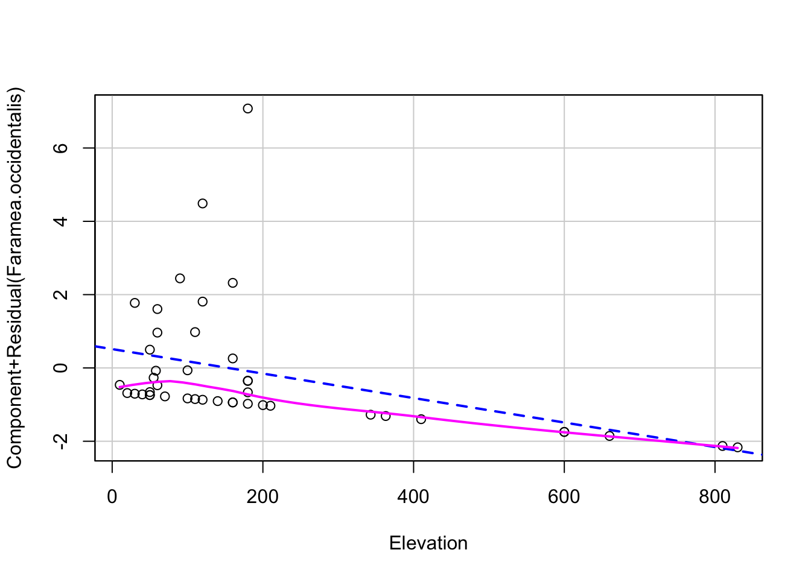
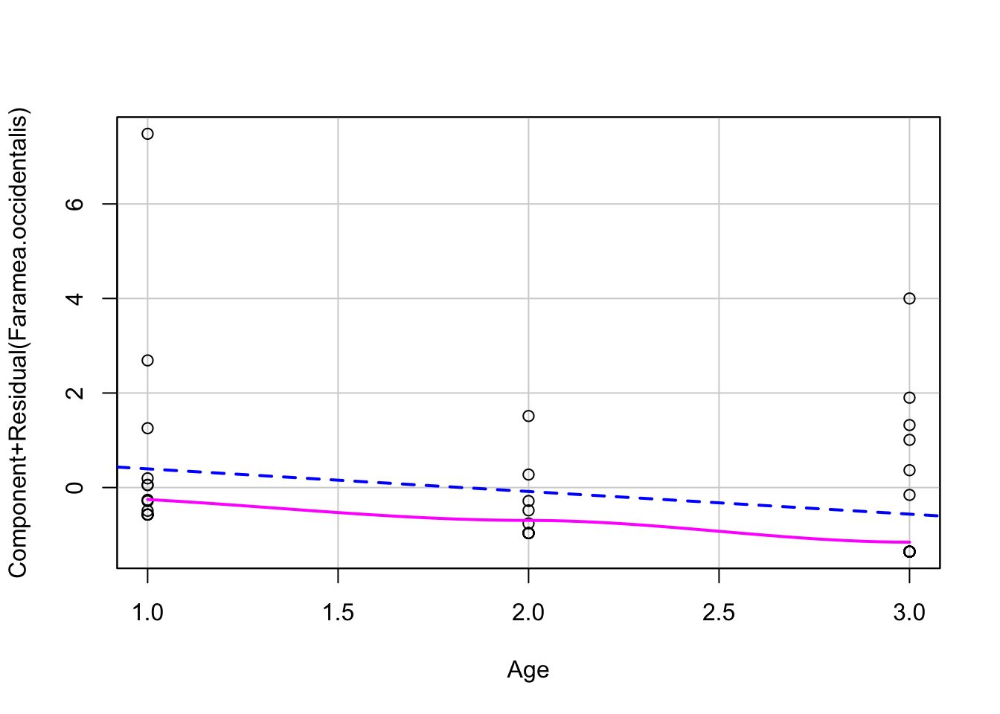
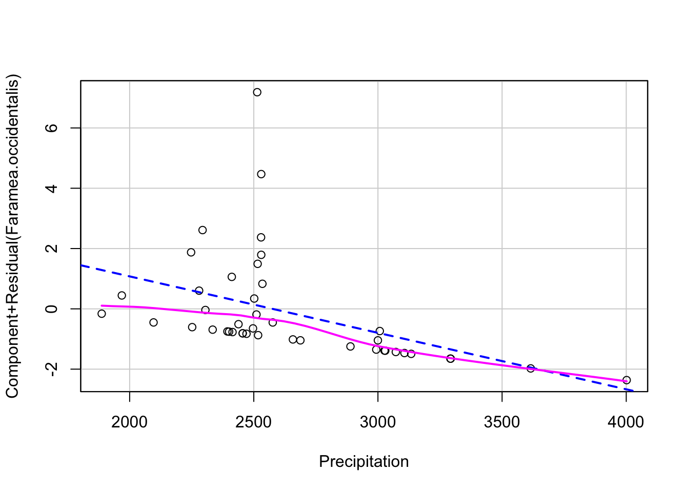
# 3. proper fitting distribution
plot(resid(glm.poisson)~predict(glm.poisson)) # fan pattern - likely due to the overdispersion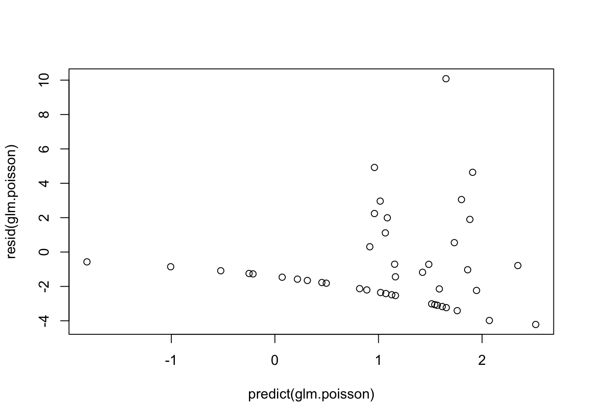
## Elevation Age Precipitation
## 1.193796 1.308440 1.397856Addressing Overdispersion in Poisson
The Poisson model assumes that the variance is equal to the mean (i.e., E(Y) = VAR(Y)). If the variance is greater than what is assumed by the model, it is called ‘overdispersion’. We can estimate overdispersion as deviance/df residuals. If this ratio is greater than 1 we have overdispersion, if it is (roughly) 1 we have equidispersion, and if it is less than 1, we have underdispersion.
If we have overdispersion of the Poisson, we can try to fit a quasipoisson model instead which will estimate the dispersion parameter instead of assuming it to be 1.
## [1] 8.765551# fit quasi-poisson to address overdispersion
glm.qpoisson = glm(Faramea.occidentalis ~ Elevation+Age+Precipitation,
data = faramea,
family = quasipoisson)
summary(glm.qpoisson)##
## Call:
## glm(formula = Faramea.occidentalis ~ Elevation + Age + Precipitation,
## family = quasipoisson, data = faramea)
##
## Coefficients:
## Estimate Std. Error t value Pr(>|t|)
## (Intercept) 4.895754 2.159927 2.267 0.029 *
## Elevation -0.001828 0.002390 -0.765 0.449
## Age -0.391851 0.397128 -0.987 0.330
## Precipitation -0.001004 0.001015 -0.989 0.329
## ---
## Signif. codes: 0 '***' 0.001 '**' 0.01 '*' 0.05 '.' 0.1 ' ' 1
##
## (Dispersion parameter for quasipoisson family taken to be 12.22231)
##
## Null deviance: 414.81 on 42 degrees of freedom
## Residual deviance: 341.86 on 39 degrees of freedom
## AIC: NA
##
## Number of Fisher Scoring iterations: 8Modelin Rates with Poisson
When modeling count data, there are scenarios where the counts observed may vary due to differences in the length of observation periods, the area covered, or the number of trials conducted. In such cases, it’s important to account for the differing observation levels using an offset in Poisson models.
**While the Poisson model can seem similar to the binomial distribution, particularly when dealing with rates of “successes”, there is a key distinction to keep in mind. The Poisson model is generally preferred when the count of successes is unbounded—that is, there is no theoretical limit to the number of successes we might observe based on the denominator. However, if the probability of success is extremely low, so much so that the numerator (the count of successes) would never be expected to approach the denominator, the Poisson model remains appropriate. In contrast, the binomial distribution is typically used when there is a fixed upper limit on the number of successes (and the denominator is this upper limit).
We will briefly review an example here where we have a rate instead of a count outcome. In this example, we will look at the dicentric dataset from faraway. The outcome of interest is the number of chromosomal abnormalities and the predictor of interest is the dose amount and dose rate. However, we also want to account for the number of cells observed as we would expect to see more abnormalities if we observed more cells. We will treat number of cells as our offset variable.
# load in the data
data(dicentric)
# view description of the data
?dicentric
# now let's look at the model without accounting for # of cells
dicentric$dose_fac <- as.factor(dicentric$doseamt)
mod_pois <- glm(ca ~ log(doserate)+dose_fac, data=dicentric, family=poisson)
summary(mod_pois) # clearly overdispersed - we are not properly accounting for the variability##
## Call:
## glm(formula = ca ~ log(doserate) + dose_fac, family = poisson,
## data = dicentric)
##
## Coefficients:
## Estimate Std. Error z value Pr(>|z|)
## (Intercept) 4.53018 0.03439 131.740 <2e-16 ***
## log(doserate) 0.20443 0.01662 12.301 <2e-16 ***
## dose_fac2.5 -0.02830 0.04857 -0.583 0.56
## dose_fac5 0.59294 0.04249 13.955 <2e-16 ***
## ---
## Signif. codes: 0 '***' 0.001 '**' 0.01 '*' 0.05 '.' 0.1 ' ' 1
##
## (Dispersion parameter for poisson family taken to be 1)
##
## Null deviance: 916.13 on 26 degrees of freedom
## Residual deviance: 460.69 on 23 degrees of freedom
## AIC: 644.1
##
## Number of Fisher Scoring iterations: 4# include log(cells) as covariate
mod_pois <- glm(ca ~ log(cells)+log(doserate)+dose_fac, data=dicentric, family=poisson)
summary(mod_pois) # close to 1, can fix at 1 and treat as offset##
## Call:
## glm(formula = ca ~ log(cells) + log(doserate) + dose_fac, family = poisson,
## data = dicentric)
##
## Coefficients:
## Estimate Std. Error z value Pr(>|z|)
## (Intercept) -3.08452 0.38201 -8.075 6.77e-16 ***
## log(cells) 1.04271 0.05158 20.217 < 2e-16 ***
## log(doserate) 0.21509 0.01674 12.850 < 2e-16 ***
## dose_fac2.5 1.72742 0.10226 16.892 < 2e-16 ***
## dose_fac5 2.89486 0.12107 23.910 < 2e-16 ***
## ---
## Signif. codes: 0 '***' 0.001 '**' 0.01 '*' 0.05 '.' 0.1 ' ' 1
##
## (Dispersion parameter for poisson family taken to be 1)
##
## Null deviance: 916.127 on 26 degrees of freedom
## Residual deviance: 42.089 on 22 degrees of freedom
## AIC: 227.5
##
## Number of Fisher Scoring iterations: 4# include log(cells) as offset
mod_pois <- glm(ca ~ offset(log(cells))+log(doserate)+dose_fac, data=dicentric, family=poisson)
summary(mod_pois)##
## Call:
## glm(formula = ca ~ offset(log(cells)) + log(doserate) + dose_fac,
## family = poisson, data = dicentric)
##
## Coefficients:
## Estimate Std. Error z value Pr(>|z|)
## (Intercept) -2.76958 0.03430 -80.74 <2e-16 ***
## log(doserate) 0.21447 0.01672 12.83 <2e-16 ***
## dose_fac2.5 1.65299 0.04857 34.03 <2e-16 ***
## dose_fac5 2.80095 0.04251 65.89 <2e-16 ***
## ---
## Signif. codes: 0 '***' 0.001 '**' 0.01 '*' 0.05 '.' 0.1 ' ' 1
##
## (Dispersion parameter for poisson family taken to be 1)
##
## Null deviance: 4753.004 on 26 degrees of freedom
## Residual deviance: 42.776 on 23 degrees of freedom
## AIC: 226.18
##
## Number of Fisher Scoring iterations: 4We see that including the offset is important as it can explain a lot of the overdispersion in the model outcome. It is important to note that the GLMs reviewed here are not exhaustive and there are many scenarios you will encounter when these will not work for your data. However, this module is to provide you with the tools necessary to think critically about your data and model assumptions.
If your outcome data is highly overdispersed, it might be better to use more complex models to account for this such as the negative binomial (see below) or the zero-inflated Poisson if you have a large number of zero’s in your outcome.
Negative Binomial
We will very briefly review negative binomial as it is important for overdispersed count data that often occurs in gene expression data and taxonomic compositions.
Load the Data
The data we are looking at is from a simulated experiment based on RNA-Seq data for differential expression. The first 6 columns are the gene expression of different genes and we have covariates for age, treatment, gender, sex. We additionally want to account for total number of reads as an offset.
# load in dataset rnaseq
data(rnaseq)
# description of dataset
?rnaseq
# view first 6 rows of dataset
head(rnaseq)## X1 X2 X3 X4 X5 X6 totalReads treatment gender age
## 1 295 65 19 114 54 20 28317494 0 0 57
## 2 213 126 12 96 50 4 20015549 0 0 67
## 3 322 147 23 245 42 19 35318251 0 1 37
## 4 184 35 9 134 74 8 20421437 0 0 59
## 5 376 104 4 74 39 7 21940693 0 1 57
## 6 490 97 18 282 159 24 48645477 0 1 50Fitting the Negative Binomial Regression
First, we will fit a Poisson regression to show how overdispersed gene expression data can be and how a negative binomial is more accommodating of this kind of data. We can fit this model with glm.nb() which will estimate the extra parameter, theta for us.
# treat X1 as outcome and fit poisson
mod_pois <- glm(X1~offset(log(totalReads))+treatment+gender+age, data=rnaseq, family=poisson)
summary(mod_pois)##
## Call:
## glm(formula = X1 ~ offset(log(totalReads)) + treatment + gender +
## age, family = poisson, data = rnaseq)
##
## Coefficients:
## Estimate Std. Error z value Pr(>|z|)
## (Intercept) -1.171e+01 2.557e-02 -458.043 < 2e-16 ***
## treatment -7.581e-01 1.020e-02 -74.337 < 2e-16 ***
## gender -8.130e-02 9.645e-03 -8.429 < 2e-16 ***
## age 2.407e-03 4.912e-04 4.901 9.55e-07 ***
## ---
## Signif. codes: 0 '***' 0.001 '**' 0.01 '*' 0.05 '.' 0.1 ' ' 1
##
## (Dispersion parameter for poisson family taken to be 1)
##
## Null deviance: 10798.2 on 199 degrees of freedom
## Residual deviance: 4890.3 on 196 degrees of freedom
## AIC: 6313.2
##
## Number of Fisher Scoring iterations: 4## [1] 24.95035# fit negative binomial
mod_nb <- glm.nb(X1~offset(log(totalReads))+treatment+gender+age, data=rnaseq)
summary(mod_nb)##
## Call:
## glm.nb(formula = X1 ~ offset(log(totalReads)) + treatment + gender +
## age, data = rnaseq, init.theta = 9.319170881, link = log)
##
## Coefficients:
## Estimate Std. Error z value Pr(>|z|)
## (Intercept) -11.777840 0.126981 -92.753 <2e-16 ***
## treatment -0.767008 0.047530 -16.137 <2e-16 ***
## gender -0.043007 0.047568 -0.904 0.366
## age 0.003463 0.002420 1.431 0.152
## ---
## Signif. codes: 0 '***' 0.001 '**' 0.01 '*' 0.05 '.' 0.1 ' ' 1
##
## (Dispersion parameter for Negative Binomial(9.3192) family taken to be 1)
##
## Null deviance: 460.37 on 199 degrees of freedom
## Residual deviance: 203.51 on 196 degrees of freedom
## AIC: 2243.7
##
## Number of Fisher Scoring iterations: 1
##
##
## Theta: 9.319
## Std. Err.: 0.965
##
## 2 x log-likelihood: -2233.659Bonus: Beta Regression
Beta regression is useful for modeling outcomes bounded between 0 and 1, such as proportions. However, it should be used when the denominator of the proportion is unknown. If the denominator is known, binomial regression is more appropriate.
Additionally, beta regression cannot handle outcomes exactly equal to 0 or 1; all values must fall strictly between these bounds.
For this example, we will look at whether there exists an association between DNA methylation at a specific CpG site and gender, age, and smoking status.
Load the Data
The dataset we will use is titled ‘smoker_Epigenetic_df.csv’ in our folder.
# first, let's load in the data
smok_dat <- read.csv('module3_Smoker_Epigenetic_df.csv') # smoker_epigenetic_Df
# view data
head(smok_dat)## GSM Smoking.Status Gender Age cg00050873 cg00212031 cg00213748
## 1 GSM1051525 current f 67 0.6075634 0.4228427 0.3724549
## 2 GSM1051526 current f 49 0.3450542 0.5686615 0.5005995
## 3 GSM1051527 current f 53 0.3213497 0.3609091 0.3527315
## 4 GSM1051528 current f 62 0.2772675 0.3044371 0.4752352
## 5 GSM1051529 never f 33 0.4135991 0.1312511 0.3675446
## 6 GSM1051530 current f 59 0.6228599 0.5016849 0.2632270
## cg00214611 cg00455876 cg01707559 cg02004872 cg02011394 cg02050847 cg02233190
## 1 0.6215619 0.2907773 0.2671431 0.1791439 0.4802517 0.3276078 0.2411204
## 2 0.4986067 0.3745909 0.1902743 0.1559775 0.4180809 0.3464627 0.1754907
## 3 0.3738240 0.2306740 0.3147052 0.1057448 0.6151030 0.2375392 0.2464092
## 4 0.4862581 0.2951815 0.2957931 0.1112862 0.3010196 0.3045353 0.1770279
## 5 0.7611667 0.2357703 0.2505265 0.1691084 0.3929746 0.3062257 0.3017014
## 6 0.4157459 0.4751891 0.2539041 0.2607587 0.5097921 0.4052457 0.3852716
## cg02494853 cg02839557 cg02842889 cg03052502 cg03155755 cg03244189 cg03443143
## 1 0.06706958 0.246993368 0.4692396 0.4002466 0.4150313 0.2214331 0.4758258
## 2 0.04693889 0.236742313 0.3074666 0.3770313 0.3973715 0.2171221 0.5444690
## 3 0.03823712 0.244611725 0.3577526 0.3050442 0.5212775 0.1850495 0.5370600
## 4 0.02671625 0.001641439 0.4457390 0.2714746 0.4344920 0.1654187 0.5079167
## 5 0.03701636 0.334319727 0.3950396 0.3265530 0.4300966 0.1811352 0.4054791
## 6 0.02583463 0.309210202 0.3218573 0.5333670 0.5715522 0.2109749 0.3778239
## cg03683899 cg03695421 cg03706273
## 1 0.2077242 0.2091974 0.12998255
## 2 0.1844462 0.1937732 0.09853265
## 3 0.3931231 0.2680030 0.04024808
## 4 0.2812089 0.2178572 0.10151626
## 5 0.3107944 0.2800708 0.07785712
## 6 0.4693609 0.3433317 0.04577912## 'data.frame': 683 obs. of 24 variables:
## $ GSM : chr "GSM1051525" "GSM1051526" "GSM1051527" "GSM1051528" ...
## $ Smoking.Status: chr "current" "current" "current" "current" ...
## $ Gender : chr " f" " f" " f" " f" ...
## $ Age : int 67 49 53 62 33 59 66 51 55 37 ...
## $ cg00050873 : num 0.608 0.345 0.321 0.277 0.414 ...
## $ cg00212031 : num 0.423 0.569 0.361 0.304 0.131 ...
## $ cg00213748 : num 0.372 0.501 0.353 0.475 0.368 ...
## $ cg00214611 : num 0.622 0.499 0.374 0.486 0.761 ...
## $ cg00455876 : num 0.291 0.375 0.231 0.295 0.236 ...
## $ cg01707559 : num 0.267 0.19 0.315 0.296 0.251 ...
## $ cg02004872 : num 0.179 0.156 0.106 0.111 0.169 ...
## $ cg02011394 : num 0.48 0.418 0.615 0.301 0.393 ...
## $ cg02050847 : num 0.328 0.346 0.238 0.305 0.306 ...
## $ cg02233190 : num 0.241 0.175 0.246 0.177 0.302 ...
## $ cg02494853 : num 0.0671 0.0469 0.0382 0.0267 0.037 ...
## $ cg02839557 : num 0.24699 0.23674 0.24461 0.00164 0.33432 ...
## $ cg02842889 : num 0.469 0.307 0.358 0.446 0.395 ...
## $ cg03052502 : num 0.4 0.377 0.305 0.271 0.327 ...
## $ cg03155755 : num 0.415 0.397 0.521 0.434 0.43 ...
## $ cg03244189 : num 0.221 0.217 0.185 0.165 0.181 ...
## $ cg03443143 : num 0.476 0.544 0.537 0.508 0.405 ...
## $ cg03683899 : num 0.208 0.184 0.393 0.281 0.311 ...
## $ cg03695421 : num 0.209 0.194 0.268 0.218 0.28 ...
## $ cg03706273 : num 0.13 0.0985 0.0402 0.1015 0.0779 ...## GSM Smoking.Status Gender Age
## Length:683 Length:683 Length:683 Min. :18.00
## Class :character Class :character Class :character 1st Qu.:47.00
## Mode :character Mode :character Mode :character Median :56.00
## Mean :53.82
## 3rd Qu.:62.00
## Max. :80.00
##
## cg00050873 cg00212031 cg00213748 cg00214611
## Min. :0.1186 Min. :0.00695 Min. :0.0000 Min. :0.01247
## 1st Qu.:0.4131 1st Qu.:0.06317 1st Qu.:0.3635 1st Qu.:0.06946
## Median :0.5052 Median :0.36554 Median :0.4713 Median :0.41575
## Mean :0.5600 Mean :0.30960 Mean :0.5191 Mean :0.34106
## 3rd Qu.:0.8144 3rd Qu.:0.45981 3rd Qu.:0.7278 3rd Qu.:0.49745
## Max. :0.8989 Max. :0.70999 Max. :0.9236 Max. :0.80606
## NA's :62 NA's :62 NA's :62 NA's :62
## cg00455876 cg01707559 cg02004872 cg02011394
## Min. :0.05917 Min. :0.04333 Min. :0.00262 Min. :0.0000
## 1st Qu.:0.29300 1st Qu.:0.11080 1st Qu.:0.04284 1st Qu.:0.4261
## Median :0.37968 Median :0.23873 Median :0.14933 Median :0.5157
## Mean :0.44718 Mean :0.21435 Mean :0.15542 Mean :0.6058
## 3rd Qu.:0.66283 3rd Qu.:0.28061 3rd Qu.:0.24263 3rd Qu.:0.9412
## Max. :0.85443 Max. :0.46999 Max. :0.47384 Max. :0.9792
## NA's :62 NA's :62 NA's :62 NA's :62
## cg02050847 cg02233190 cg02494853 cg02839557
## Min. :0.05234 Min. :0.00863 Min. :0.01162 Min. :0.00000
## 1st Qu.:0.33963 1st Qu.:0.08838 1st Qu.:0.02865 1st Qu.:0.06384
## Median :0.42754 Median :0.25982 Median :0.03695 Median :0.35042
## Mean :0.54369 Mean :0.23250 Mean :0.04077 Mean :0.30088
## 3rd Qu.:0.95558 3rd Qu.:0.33702 3rd Qu.:0.04677 3rd Qu.:0.45786
## Max. :0.98320 Max. :0.51173 Max. :0.28947 Max. :0.82739
## NA's :62 NA's :62 NA's :62 NA's :62
## cg02842889 cg03052502 cg03155755 cg03244189
## Min. :0.01346 Min. :0.0000 Min. :0.2020 Min. :0.02972
## 1st Qu.:0.05483 1st Qu.:0.4025 1st Qu.:0.4245 1st Qu.:0.11976
## Median :0.39757 Median :0.4940 Median :0.4962 Median :0.20397
## Mean :0.32362 Mean :0.5907 Mean :0.5895 Mean :0.19552
## 3rd Qu.:0.47385 3rd Qu.:0.9631 3rd Qu.:0.8988 3rd Qu.:0.24921
## Max. :0.85625 Max. :0.9902 Max. :0.9696 Max. :0.54074
## NA's :62 NA's :62 NA's :62 NA's :62
## cg03443143 cg03683899 cg03695421 cg03706273
## Min. :0.06496 Min. :0.00788 Min. :0.0949 Min. :0.01120
## 1st Qu.:0.40963 1st Qu.:0.06159 1st Qu.:0.2566 1st Qu.:0.03413
## Median :0.48314 Median :0.34422 Median :0.3208 Median :0.04961
## Mean :0.56841 Mean :0.28442 Mean :0.3978 Mean :0.05769
## 3rd Qu.:0.85436 3rd Qu.:0.41866 3rd Qu.:0.5965 3rd Qu.:0.06916
## Max. :0.93589 Max. :0.65925 Max. :0.8433 Max. :0.34380
## NA's :62 NA's :62 NA's :62 NA's :62##
## f F m M
## 440 13 181 49##
## current never
## 490 193# clean gender
smok_dat_c <- smok_dat %>% mutate(Gender=case_when(Gender==" f"~"F",
Gender==" F"~"F",
Gender==" m"~"M",
Gender==" M"~"M"))
table(smok_dat_c$Gender)##
## F M
## 453 230Fitting Beta Regression
To fit beta regression, we need to use the gam() function from the mgcv package in R. We set family=betar() in this function.
# look at effect of smoking status, gender, and age on methylation
modb <- gam(cg00455876~Smoking.Status+Gender+Age, data=smok_dat_c, family=betar())
summary(modb)##
## Family: Beta regression(31.518)
## Link function: logit
##
## Formula:
## cg00455876 ~ Smoking.Status + Gender + Age
##
## Parametric coefficients:
## Estimate Std. Error z value Pr(>|z|)
## (Intercept) -0.7581417 0.0731284 -10.367 <2e-16 ***
## Smoking.Statusnever 0.0655020 0.0328325 1.995 0.046 *
## GenderM 1.6778920 0.0342145 49.040 <2e-16 ***
## Age 0.0005844 0.0013288 0.440 0.660
## ---
## Signif. codes: 0 '***' 0.001 '**' 0.01 '*' 0.05 '.' 0.1 ' ' 1
##
##
## R-sq.(adj) = 0.832 Deviance explained = 82.5%
## -REML = -670.56 Scale est. = 1 n = 621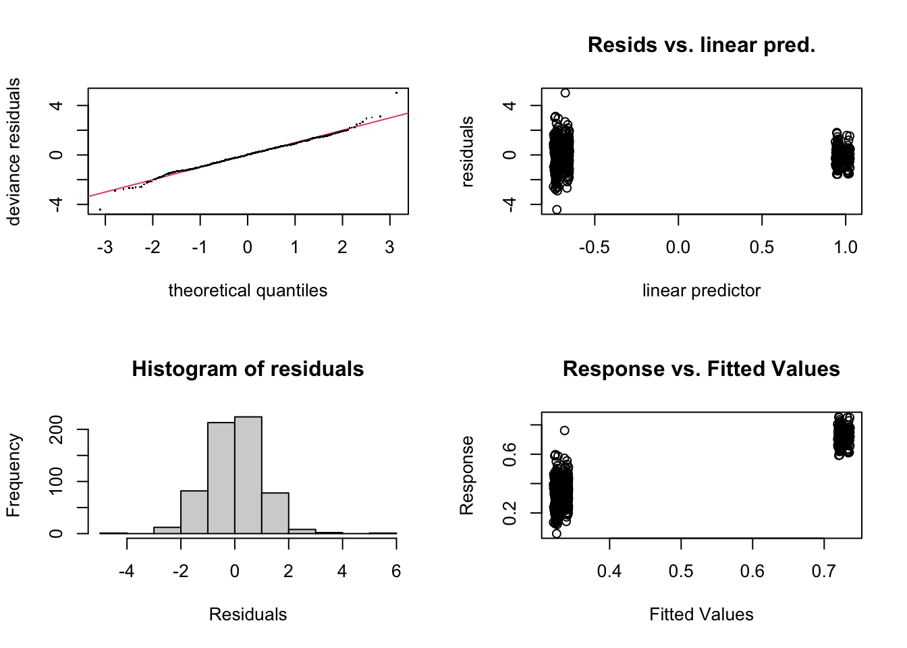
##
## Method: REML Optimizer: outer newton
## full convergence after 6 iterations.
## Gradient range [4.752114e-09,4.752114e-09]
## (score -670.5585 & scale 1).
## Hessian positive definite, eigenvalue range [317.2695,317.2695].
## Model rank = 4 / 4The mgcv package has a useful function, gam.check, that allows us to check all of our usual model assumptions. In the QQ plot, we want the dots to follow roughly along the diagonal line if we assumed the correct distribution (beta) for our data. In the residual vs fitted plot, we are looking for a random scattering of points as usual.
Independent Work
Exercise 2 - Healthcare demand in U.S.A
For this example we will look at the demand of healthcare in the U.S.A based on certain risk factors such as age, sex, income, etc. We will first load in the dataset, ‘healthcare_demand_nmes1988.csv’ from our folder.
# 1. Load in the dataset.
health <- read.csv('module3_healthcare_demand_nmes1988.csv') # Healthcare demand dataset
# 2. view data
str(health)## 'data.frame': 4406 obs. of 18 variables:
## $ visits : int 5 1 13 16 3 17 9 3 1 0 ...
## $ nvisits : int 0 0 0 0 0 0 0 0 0 0 ...
## $ ovisits : int 0 2 0 5 0 0 0 0 0 0 ...
## $ novisits : int 0 0 0 0 0 0 0 0 0 0 ...
## $ emergency: int 0 2 3 1 0 0 0 0 0 0 ...
## $ hospital : int 1 0 3 1 0 0 0 0 0 0 ...
## $ health : chr "average" "average" "poor" "poor" ...
## $ chronic : int 2 2 4 2 2 5 0 0 0 0 ...
## $ adl : chr "normal" "normal" "limited" "limited" ...
## $ region : chr "other" "other" "other" "other" ...
## $ age : num 6.9 7.4 6.6 7.6 7.9 6.6 7.5 8.7 7.3 7.8 ...
## $ gender : chr "male" "female" "female" "male" ...
## $ married : chr "yes" "yes" "no" "yes" ...
## $ school : int 6 10 10 3 6 7 8 8 8 8 ...
## $ income : num 2.881 2.748 0.653 0.659 0.659 ...
## $ employed : chr "yes" "no" "no" "no" ...
## $ insurance: chr "yes" "yes" "no" "yes" ...
## $ medicaid : chr "no" "no" "yes" "no" ...## visits nvisits ovisits novisits emergency hospital health chronic adl
## 1 5 0 0 0 0 1 average 2 normal
## 2 1 0 2 0 2 0 average 2 normal
## 3 13 0 0 0 3 3 poor 4 limited
## 4 16 0 5 0 1 1 poor 2 limited
## 5 3 0 0 0 0 0 average 2 limited
## 6 17 0 0 0 0 0 poor 5 limited
## region age gender married school income employed insurance medicaid
## 1 other 6.9 male yes 6 2.8810 yes yes no
## 2 other 7.4 female yes 10 2.7478 no yes no
## 3 other 6.6 female no 10 0.6532 no no yes
## 4 other 7.6 male yes 3 0.6588 no yes no
## 5 other 7.9 female yes 6 0.6588 no yes no
## 6 other 6.6 female no 7 0.3301 no no yes# fix income (notice that some incomes are negative, we will set those to 0)
health$income[health$income<0] <- 0- Choose an appropriate regression model if visits is our outcome and our predictors are health, chronic, adl, income, gender, age, insurance, medicaid. Additionally include an interaction term between income and gender. Fit this model to the data.
# we will choose a Poisson regression given that the outcome is a discrete count
glm_mod <- glm(visits~health+chronic+adl+income*gender+age+insurance+medicaid, family="poisson", data=health)
summary(glm_mod)##
## Call:
## glm(formula = visits ~ health + chronic + adl + income * gender +
## age + insurance + medicaid, family = "poisson", data = health)
##
## Coefficients:
## Estimate Std. Error z value Pr(>|z|)
## (Intercept) 1.699105 0.085126 19.960 < 2e-16 ***
## healthexcellent -0.353853 0.030311 -11.674 < 2e-16 ***
## healthpoor 0.259091 0.018087 14.325 < 2e-16 ***
## chronic 0.163046 0.004534 35.964 < 2e-16 ***
## adlnormal -0.089349 0.016605 -5.381 7.41e-08 ***
## income -0.003374 0.003104 -1.087 0.277
## gendermale -0.137261 0.017031 -8.060 7.66e-16 ***
## age -0.062546 0.010478 -5.969 2.38e-09 ***
## insuranceyes 0.378897 0.018923 20.023 < 2e-16 ***
## medicaidyes 0.248354 0.024639 10.080 < 2e-16 ***
## income:gendermale 0.017089 0.004123 4.145 3.40e-05 ***
## ---
## Signif. codes: 0 '***' 0.001 '**' 0.01 '*' 0.05 '.' 0.1 ' ' 1
##
## (Dispersion parameter for poisson family taken to be 1)
##
## Null deviance: 26943 on 4405 degrees of freedom
## Residual deviance: 23818 on 4395 degrees of freedom
## AIC: 36615
##
## Number of Fisher Scoring iterations: 5- Interpret the interaction term between income and gender
Income has a larger association with nummber of visits for males such that males with higher income are likely to have more visits while income does not have an effect on visits for females.
- Check model assumptions (also look for overdispersion if appropriate for the model you chose) - note that you cannot use crPlot since we included an interaction so we can assume the linearity assumption is met for now.
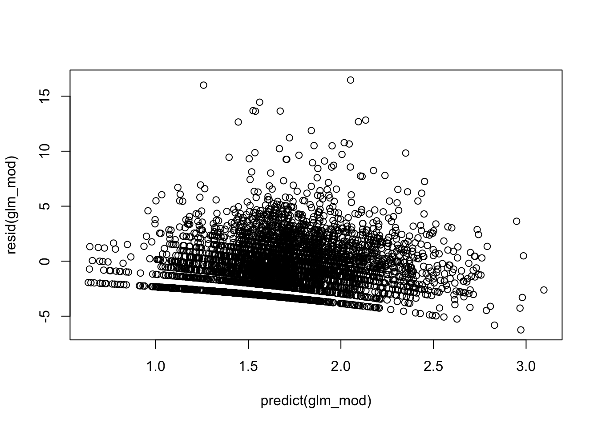
# overdispersed?
glm_summary <- summary(glm_mod)
glm_summary$deviance/glm_summary$df.residual # overdispersed## [1] 5.419233- Fix any model violations you may have noticed.
# we will log transform income (need to add 0.1 since we cannot take log of 0)
health$income_log <- log(health$income+0.1)
# Fitting quasipoisson to account for overdisperion
glm_mod1 <- glm(visits~health+chronic+adl+income_log*gender+age+insurance+medicaid, family="quasipoisson", data=health)
summary(glm_mod1)##
## Call:
## glm(formula = visits ~ health + chronic + adl + income_log *
## gender + age + insurance + medicaid, family = "quasipoisson",
## data = health)
##
## Coefficients:
## Estimate Std. Error t value Pr(>|t|)
## (Intercept) 1.68935 0.22585 7.480 8.93e-14 ***
## healthexcellent -0.35470 0.08038 -4.413 1.05e-05 ***
## healthpoor 0.26340 0.04803 5.484 4.40e-08 ***
## chronic 0.16305 0.01203 13.555 < 2e-16 ***
## adlnormal -0.08755 0.04408 -1.986 0.047067 *
## income_log -0.01862 0.02621 -0.710 0.477459
## gendermale -0.16838 0.04704 -3.579 0.000348 ***
## age -0.06075 0.02784 -2.182 0.029129 *
## insuranceyes 0.37319 0.05050 7.390 1.74e-13 ***
## medicaidyes 0.24667 0.06602 3.736 0.000189 ***
## income_log:gendermale 0.10583 0.04323 2.448 0.014410 *
## ---
## Signif. codes: 0 '***' 0.001 '**' 0.01 '*' 0.05 '.' 0.1 ' ' 1
##
## (Dispersion parameter for quasipoisson family taken to be 7.032885)
##
## Null deviance: 26943 on 4405 degrees of freedom
## Residual deviance: 23794 on 4395 degrees of freedom
## AIC: NA
##
## Number of Fisher Scoring iterations: 5Advanced exercise - Multivariate count data
# we will log transform income (need to add 0.1 since we cannot take log of 0)
health$income_log <- log(health$income+0.1)
# Fitting quasipoisson to account for overdisperion
glm_mod1 <- glm(visits~health+chronic+adl+income_log*gender+age+insurance+medicaid, family="quasipoisson", data=health)
summary(glm_mod1)##
## Call:
## glm(formula = visits ~ health + chronic + adl + income_log *
## gender + age + insurance + medicaid, family = "quasipoisson",
## data = health)
##
## Coefficients:
## Estimate Std. Error t value Pr(>|t|)
## (Intercept) 1.68935 0.22585 7.480 8.93e-14 ***
## healthexcellent -0.35470 0.08038 -4.413 1.05e-05 ***
## healthpoor 0.26340 0.04803 5.484 4.40e-08 ***
## chronic 0.16305 0.01203 13.555 < 2e-16 ***
## adlnormal -0.08755 0.04408 -1.986 0.047067 *
## income_log -0.01862 0.02621 -0.710 0.477459
## gendermale -0.16838 0.04704 -3.579 0.000348 ***
## age -0.06075 0.02784 -2.182 0.029129 *
## insuranceyes 0.37319 0.05050 7.390 1.74e-13 ***
## medicaidyes 0.24667 0.06602 3.736 0.000189 ***
## income_log:gendermale 0.10583 0.04323 2.448 0.014410 *
## ---
## Signif. codes: 0 '***' 0.001 '**' 0.01 '*' 0.05 '.' 0.1 ' ' 1
##
## (Dispersion parameter for quasipoisson family taken to be 7.032885)
##
## Null deviance: 26943 on 4405 degrees of freedom
## Residual deviance: 23794 on 4395 degrees of freedom
## AIC: NA
##
## Number of Fisher Scoring iterations: 5Advanced exercise - Multivariate count data
Often in gene expression data or compositional data, we have multiple counts. The package MGLM in R offers functions to fit multivariate count models such as the multinomial model and more advanced models to handle overdispersion of these counts.
Let’s look again at the rna seq dataset we used for the negative binomial example.
# load the dataset
data(rnaseq)
# look at description of the dataset
?rnaseq
# look at first 6 rows
head(rnaseq)## X1 X2 X3 X4 X5 X6 totalReads treatment gender age
## 1 295 65 19 114 54 20 28317494 0 0 57
## 2 213 126 12 96 50 4 20015549 0 0 67
## 3 322 147 23 245 42 19 35318251 0 1 37
## 4 184 35 9 134 74 8 20421437 0 0 59
## 5 376 104 4 74 39 7 21940693 0 1 57
## 6 490 97 18 282 159 24 48645477 0 1 50## X1 X2 X3 X4
## Min. : 29.0 Min. : 15.00 Min. : 3.0 Min. : 54.0
## 1st Qu.:132.8 1st Qu.: 43.00 1st Qu.: 15.0 1st Qu.:138.8
## Median :191.0 Median : 66.00 Median : 32.0 Median :201.5
## Mean :215.6 Mean : 73.72 Mean : 68.1 Mean :242.6
## 3rd Qu.:275.8 3rd Qu.: 96.25 3rd Qu.:109.2 3rd Qu.:320.5
## Max. :711.0 Max. :186.00 Max. :259.0 Max. :684.0
## X5 X6 totalReads treatment
## Min. : 18.00 Min. : 2.00 Min. :20015549 Min. :0.0
## 1st Qu.: 40.00 1st Qu.: 8.00 1st Qu.:26675268 1st Qu.:0.0
## Median : 58.00 Median :12.50 Median :33177688 Median :0.5
## Mean : 65.25 Mean :14.69 Mean :33748425 Mean :0.5
## 3rd Qu.: 81.00 3rd Qu.:19.00 3rd Qu.:40486800 3rd Qu.:1.0
## Max. :183.00 Max. :41.00 Max. :49813815 Max. :1.0
## gender age
## Min. :0.000 Min. :26.00
## 1st Qu.:0.000 1st Qu.:43.00
## Median :1.000 Median :50.00
## Mean :0.525 Mean :49.69
## 3rd Qu.:1.000 3rd Qu.:56.25
## Max. :1.000 Max. :77.00- Look up the function MGLMreg to learn about it. What distributions can you fit with this function?
Multinomial (dist=“MN”), Dirichlet-multinomial (dist=“DM”), generalized Dirichlet-multinomial (dist=“GDM”), and negative multinomial (dist=“NM”).
- Let’s fit a multinomial regression to the 6 gene expression columns with gender, age, and treatment as our covariates. We will include log(totalreads) as well.
# the multinomial outcome model would assume NO overdispersion:
mnreg <- MGLMreg(formula = cbind(X1, X2, X3, X4, X5, X6) ~ log(totalReads) +
treatment + age + gender, data = rnaseq, dist = "MN")
print(mnreg)## Call: MGLMreg(formula = cbind(X1, X2, X3, X4, X5, X6) ~ log(totalReads) +
## treatment + age + gender, data = rnaseq, dist = "MN")
##
## Coefficients:
## X1 X2 X3 X4 X5
## [1,] 4.942732 5.009649 -3.792216 4.435434 4.027689
## [2,] -0.112845 -0.170222 0.219277 -0.107260 -0.120928
## [3,] -0.022655 -0.043099 2.745277 1.405742 0.092246
## [4,] -0.006187 -0.009709 -0.005907 -0.010945 -0.009599
## [5,] 0.032676 0.100389 0.020663 0.103859 0.009514
##
## Hypothesis test:
## wald value Pr(>wald)
## (Intercept) 144.88789 1.634268e-29
## log(totalReads) 69.92572 1.061922e-13
## treatment 18364.13260 0.000000e+00
## age 79.91023 8.762650e-16
## gender 52.33670 4.601575e-10
##
## Distribution: Multinomial
## Log-likelihood: -7506.393
## BIC: 15145.24
## AIC: 15062.79
## Iterations: 6Each row of the coefficient matrix in this output corresponds to our covariates (intercept, log(totalReads), treatment, age, gender) and each column corresponds to our outcomes (X1,…,X6). For example, the coefficient in the first row and first column (4.943) estimates the intercept of X1 which gives the log of baseline expression levels. The second row/first column coefficient (-0.113) gives the estimated association between log(totalReads) and gene expression of X1.
- Given that this dataset is overdispersed, it is likely that we will need to use a different distribution to accommodate this. Choose one of the distributions available other than “MN”
# we can change "MN" in the previous code to "DM" to fit a Dirichlet-multinomial regression
dmreg <- MGLMreg(formula = cbind(X1, X2, X3, X4, X5, X6) ~ log(totalReads) +
treatment + age + gender, data = rnaseq, dist = "DM")
print(dmreg)## Call: MGLMreg(formula = cbind(X1, X2, X3, X4, X5, X6) ~ log(totalReads) +
## treatment + age + gender, data = rnaseq, dist = "DM")
##
## Coefficients:
## X1 X2 X3 X4 X5 X6
## [1,] -0.895850 -1.096921 -8.997414 -1.736871 -1.774227 -5.646822
## [2,] 0.221988 0.186919 0.536572 0.252679 0.216672 0.347271
## [3,] -0.679291 -0.686881 1.835585 0.707954 -0.546469 -0.543134
## [4,] 0.010245 0.005227 0.009134 0.004252 0.006090 0.011642
## [5,] -0.026177 0.040244 -0.052842 0.023178 -0.058339 -0.039139
##
## Hypothesis test:
## wald value Pr(>wald)
## (Intercept) 14.579069 0.02379579
## log(totalReads) 8.502549 0.20354699
## treatment 1851.437449 0.00000000
## age 13.131512 0.04099442
## gender 4.133364 0.65863419
##
## Distribution: Dirichlet Multinomial
## Log-likelihood: -4386.941
## BIC: 8932.831
## AIC: 8833.882
## Iterations: 9If we wanted to know which model provided a better fit, we could compare their information criterion. For instance, the Bayesian Information Criterion (BIC) is designed to balance model complexity and model fit. A lower BIC indicates a better fitting model. Let’s compare the BIC of our two models fit using the BIC() function in R. Which model fits better for this data?
## [1] 8932.831## [1] 15145.24